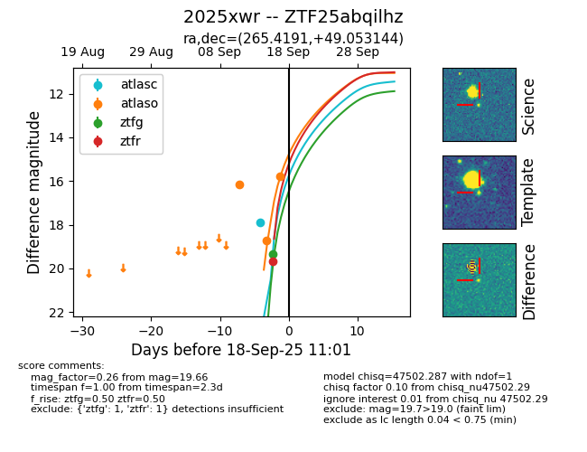

FINK: ZTF25abqilhz
Lasair: ZTF25abqilhz
ALeRCE: ZTF25abqilhz
TNS: 2025xwr
YSE: 2025xwr
ZTF25abqilhz (ztf,fink)
2025xwr (tns,yse)
equatorial (ra, dec) = (265.4191,+49.05314)
galactic (l, b) = (75.9134,+31.28022)

last atlasc=17.88, atlaso=16.19, ztfg=19.31, ztfr=19.68
1 atlasc, 3 atlaso, 2 ztfg, 2 ztfr detections